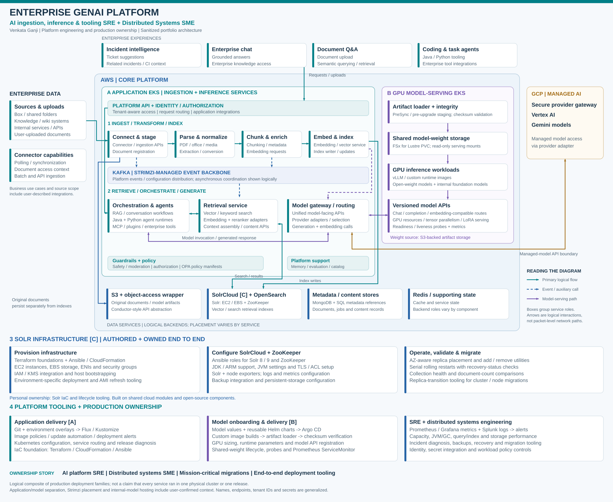
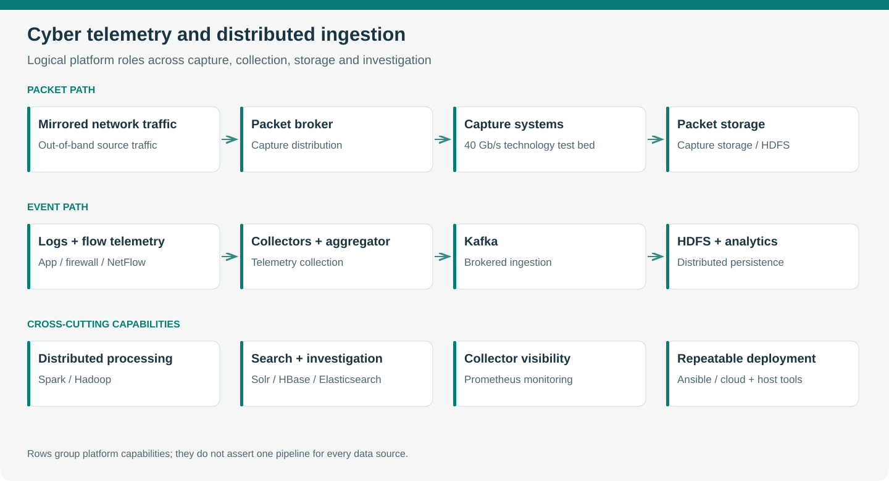

VENKATA GANJI / ENGINEERING PORTFOLIO
AI infrastructure.
Distributed systems.
Production ownership.
I build and operate the systems behind enterprise AI and data platforms—from telemetry ingestion and cloud migrations to vector retrieval and GPU-backed model serving.
12+ years of professional engineering · Concord, California
SELECTED WORK / FOUR ENGINEERING STORIES
Architecture with an
operating story.
Each case connects the problem, my contribution, the system design and the outcome. Start with GenAI for AI platform roles, or explore the data and migration work underneath.
Enterprise GenAI platform
Connecting enterprise knowledge to model-backed applications—and owning the infrastructure that keeps retrieval and serving reliable.

Cyber telemetry & distributed ingestion
Turning packets, flows and security events into a correlated data platform, with performance work from the network interface through distributed storage.

Mission-critical cloud migration
A migration that connected data movement, search modernization, application access and operational recovery.

Cloud automation, identity & recovery
Making a hybrid application work across network, identity, storage and recovery boundaries—with repeatable infrastructure underneath.

HOW I WORK
I follow the problem
across system boundaries.
My work spans application infrastructure, distributed storage and the operational details between them. I write deployment and lifecycle tooling, diagnose performance, lead migrations and stay accountable for production behavior.
At Apple, as a contractor through Mphasis, that meant ingestion, inference and model-serving infrastructure. At Cloudwick, it included cyber telemetry, enterprise cloud migrations and large distributed-data environments.
Connect on LinkedIn ↗These are sanitized reconstructions of systems and design artifacts from my work. Internal addresses, hostnames and deployment identifiers are omitted. Each case distinguishes my contribution, team architecture context and the scope of reported results.